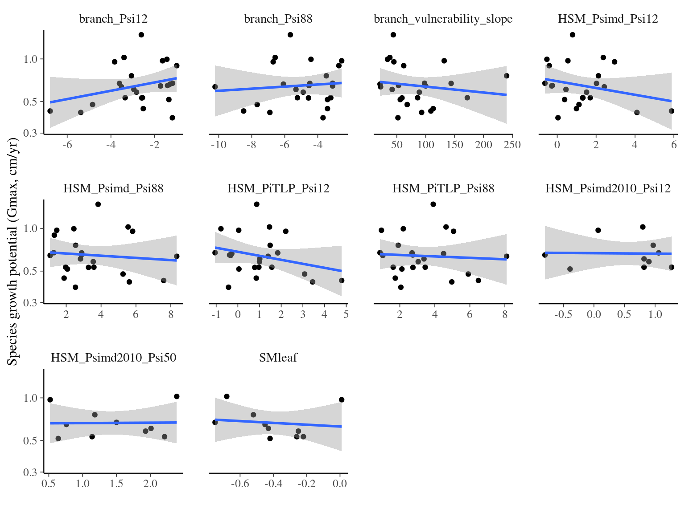
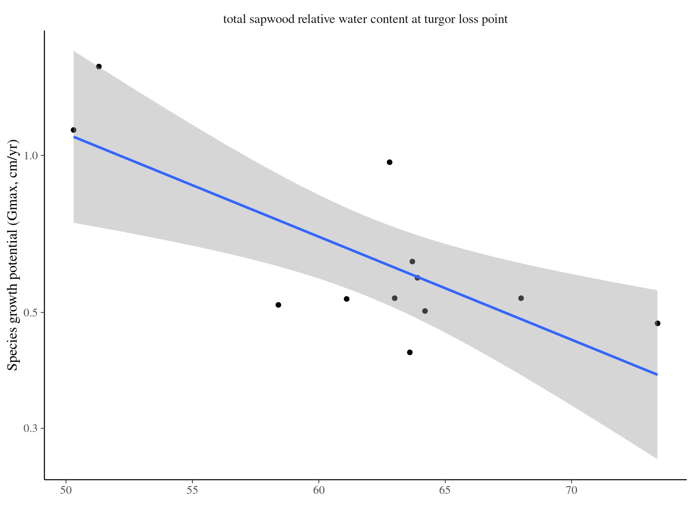
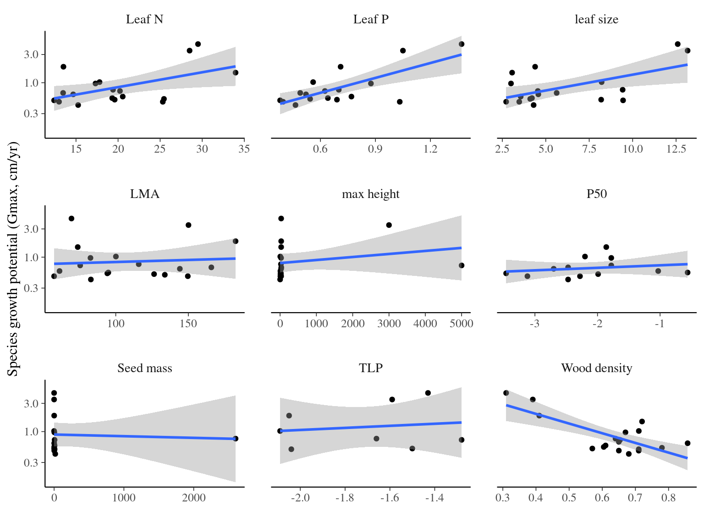

Chapter 5 Functional analyses
In this chapter, I quickly investigated effects of functional traits and weather on individual growth.
5.1 Methods
I used linear model for individual growth potential relation to functional traits at the individual or species level. For each dataset, I first used a step procedure to select explanatory variables before using linear models with multiple variables. I then plotted the individual relations between response and explanatory variables.
5.2 Results
5.2.1 ParacouITV
Interestingly, leaf dry matter content seems to drive individual growth potential within species of Symphonia and Eschweilera genera (\(\beta=-0.91, p=0.016, R^2=0.083\)), but the signal is weak.
| log(gmax) | |||
|---|---|---|---|
| Predictors | Estimates | CI | p |
| (Intercept) | -1.65 | -4.82 – 1.52 | 0.302 |
| CC | 0.02 | -0.00 – 0.04 | 0.090 |
| LA [log] | -0.14 | -0.50 – 0.22 | 0.430 |
| LDMC [log] | -0.41 | -1.80 – 0.97 | 0.553 |
| Observations | 62 | ||
| R2 / R2 adjusted | 0.089 / 0.042 | ||

5.2.2 hydroParacou
Interestingly, turgor loss point and stomatal density appear to influence species growth potential with a positive effect (\(\beta=1.13, p=0.004\) & \(\beta=0.28, p<0.001\), \(R^2=0.0312\)). Species with more stomata lose their turgidity more quickly but grow faster.
| log(gmax) | |||
|---|---|---|---|
| Predictors | Estimates | CI | p |
| (Intercept) | 0.48 | -0.25 – 1.22 | 0.192 |
| Ptlp | 0.76 | 0.03 – 1.48 | 0.042 |
| CN [log] | -0.40 | -0.81 – 0.01 | 0.058 |
| stomataD [log] | 0.34 | 0.19 – 0.49 | <0.001 |
| Observations | 58 | ||
| R2 / R2 adjusted | 0.427 / 0.395 | ||

5.2.3 Vleminckx et al. 2021
| log(gmax) | |||
|---|---|---|---|
| Predictors | Estimates | CI | p |
| (Intercept) | -0.19 | -0.26 – -0.12 | <0.001 |
| C | -0.05 | -0.13 – 0.03 | 0.210 |
| N | 0.20 | 0.12 – 0.28 | <0.001 |
| K | -0.15 | -0.23 – -0.07 | <0.001 |
| Sapwood WSG | -0.23 | -0.31 – -0.15 | <0.001 |
| WSG | 0.10 | 0.02 – 0.18 | 0.015 |
| Observations | 120 | ||
| R2 / R2 adjusted | 0.397 / 0.371 | ||
5.2.4 Ziegler et al. 2019
| log(gmax) | |||
|---|---|---|---|
| Predictors | Estimates | CI | p |
| (Intercept) | -0.25 | -0.75 – 0.25 | 0.310 |
|
branch vulnerability slope |
-0.00 | -0.00 – 0.00 | 0.419 |
| HSM PiTLP Psi88 | -0.03 | -0.12 – 0.06 | 0.536 |
| Observations | 23 | ||
| R2 / R2 adjusted | 0.037 / -0.059 | ||

5.2.5 Santiago et al. 2018
| log(gmax) | |||
|---|---|---|---|
| Predictors | Estimates | CI | p |
| (Intercept) | 2.37 | 0.58 – 4.16 | 0.015 |
|
total sapwood relative water content at turgor loss point |
-0.05 | -0.07 – -0.02 | 0.006 |
| Observations | 12 | ||
| R2 / R2 adjusted | 0.553 / 0.508 | ||

5.2.6 Maréchaux et al. 2015
| log(gmax) | |||
|---|---|---|---|
| Predictors | Estimates | CI | p |
| (Intercept) | 0.45 | -0.65 – 1.55 | 0.409 |
| Pi tlp | 0.43 | -0.13 – 0.99 | 0.128 |
| Observations | 28 | ||
| R2 / R2 adjusted | 0.087 / 0.052 | ||
5.2.7 Guillemot et al. 2022
| log(gmax) | |||
|---|---|---|---|
| Predictors | Estimates | CI | p |
| (Intercept) | 0.24 | -1.84 – 2.33 | 0.804 |
| leaf size [log] | 0.07 | -0.01 – 0.15 | 0.101 |
| Leaf N | -0.02 | -0.09 – 0.05 | 0.551 |
| Leaf P | 1.15 | -0.55 – 2.85 | 0.165 |
| Wood density | -2.05 | -4.40 – 0.29 | 0.080 |
| Observations | 17 | ||
| R2 / R2 adjusted | 0.773 / 0.698 | ||
